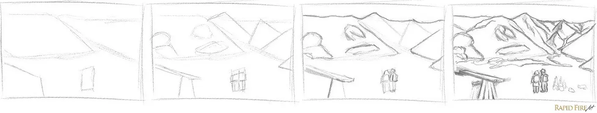
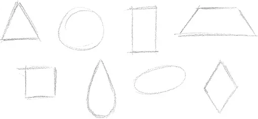
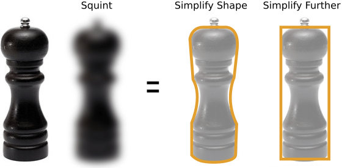

Lección 2: Aprende a ver las cosa de manera diferente
Este es un ejemplo de cómo dibujaba al principio. Trazaba el objeto con la vista mientras trasladaba lo que veía al papel inmediatamente, sin pensar demasiado en el resto del objeto. Es aún más exagerado al dibujar temas complejos. Si eres como yo, la razón por la que nuestros dibujos están tan distorsionados es porque nos centramos demasiado en una sola área en lugar de ver el panorama general . Esto se llama visión de túnel.
Descomponiendo el mundo en formas simples
Todo lo que vemos a nuestro alrededor se puede descomponer en una serie de formas simples.
Ya sea un objeto individual o una escena entera, puedes desglosarlo en tu mente con un poco de concentración.
Ejemplo
¿Cuales son las formas que componen este molinillo de pimienta?
Para mí, es un rectángulo.

¡Mucho mejor! El primer rectángulo sirve de contenedor para el resto de las formas, lo que permite crear un solo objeto sólido. Genial, ¿verdad? Entonces ¿la gente realmente dibuja así? Sí, muchos artistas lo hacen, pero la mayoría lo hacen mentalmente. Eso significa que pueden hacer todo esto sin planearlo primero en papel. ¡Es una habilidad valiosa que se adquiere con mucha práctica!